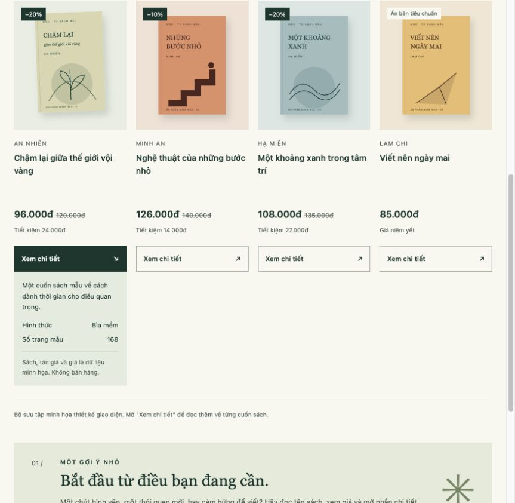
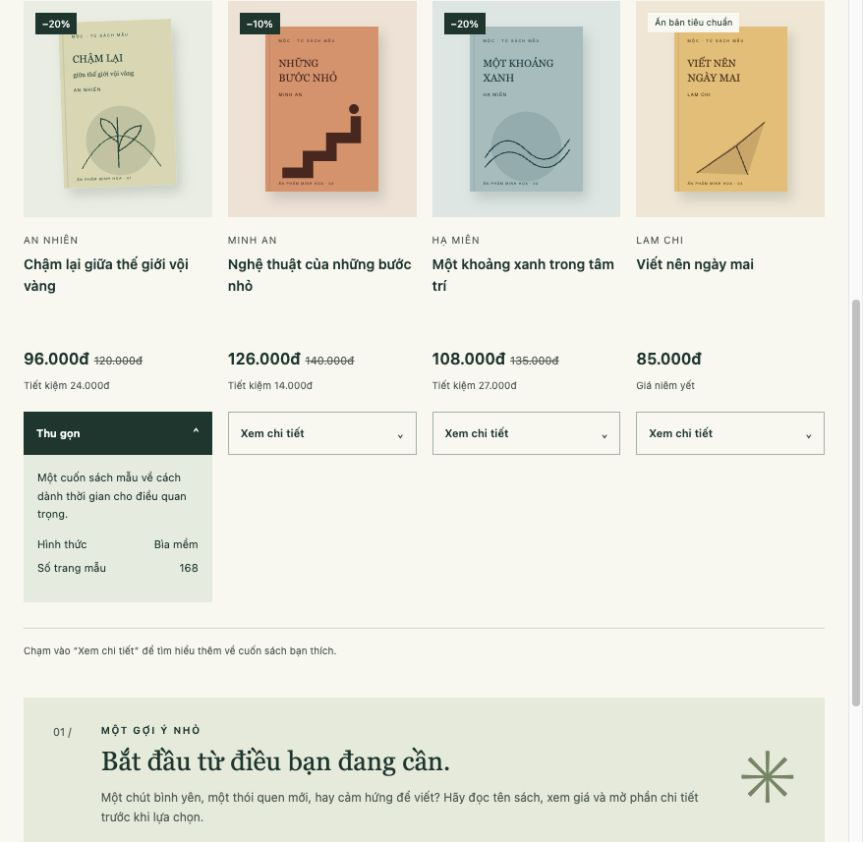

Chạy thử và chỉnh sửa
Sau khi làm xong giao diện, trang được mở trên trình duyệt để xem lại bố cục, hình ảnh và các nút bấm.
1. Những phần đã kiểm tra
- Bốn cuốn sách đều hiện ảnh, tên, tác giả và giá.
- Tên dài được xuống dòng, không bị mất chữ.
- Giá gốc, giá giảm và số tiền tiết kiệm khớp nhau.
- Cả bốn nút chi tiết đều mở được và đóng lại bằng phím Enter.
- Các liên kết trong trang và liên kết đến báo cáo mở đúng chỗ.
| Khung màn hình | Cách hiển thị | Kết quả |
|---|---|---|
| 320px | 1 cột | Ảnh và tên sách nằm gọn trong trang, không cần kéo ngang. |
| 390px | 2 cột | Đọc đủ tên sách, mở và thu gọn được phần giới thiệu. |
| 768px | 4 cột | Các thẻ vẫn đủ chỗ cho tên và giá. |
| 1440px | 4 cột | Các thẻ và nút bấm được xếp đều nhau. |
Các kích thước trên được thử bằng khung hiển thị trên trình duyệt máy tính, chưa thử trên điện thoại thật.
2. Chỗ đã sửa
Ảnh bìa ở phần đầu trang
Ban đầu ảnh có chiều rộng nhỏ nhưng chiều cao vẫn cố định nên phần ảnh và bóng đổ bị kéo dài. Thêm height: auto vào .hero-book giúp ảnh giữ đúng tỉ lệ và nằm gọn hơn.
Nút xem chi tiết
Lúc mở phần giới thiệu sách, nút vẫn ghi “Xem chi tiết”. Nhãn này chưa nói rõ thao tác tiếp theo. Sau khi sửa, nút đổi thành “Thu gọn” khi nội dung đang mở, đồng thời mũi tên hướng lên.


3. Giải thích ngắn phần mã đã sửa
Thẻ details dùng để chứa phần thông tin có thể mở ra. summary là phần có thể bấm. Khi mở, trình duyệt tự thêm thuộc tính open cho thẻ details.
Trong nút có hai nhãn. CSS chỉ cho hiện một nhãn theo trạng thái mở hoặc đóng:
.label-open { display: none; }
details[open] > summary .label-closed { display: none; }
details[open] > summary .label-open { display: inline; }Như vậy chỉ cần HTML và CSS, không phải viết thêm JavaScript. Mở bằng chuột hay bàn phím thì nhãn đều thay đổi theo.
4. Giao diện sau khi chỉnh


5. Nhận xét sau khi làm
Một thay đổi nhỏ ở tên nút cũng giúp thao tác dễ hiểu hơn. Với danh sách sản phẩm, tên sách và giá cần rõ ràng trước, sau đó mới đến các chi tiết trang trí.
Ngày kiểm tra: 20/10/2026 · Phần hỗ trợ từ AI được ghi trong AI_USAGE.md.